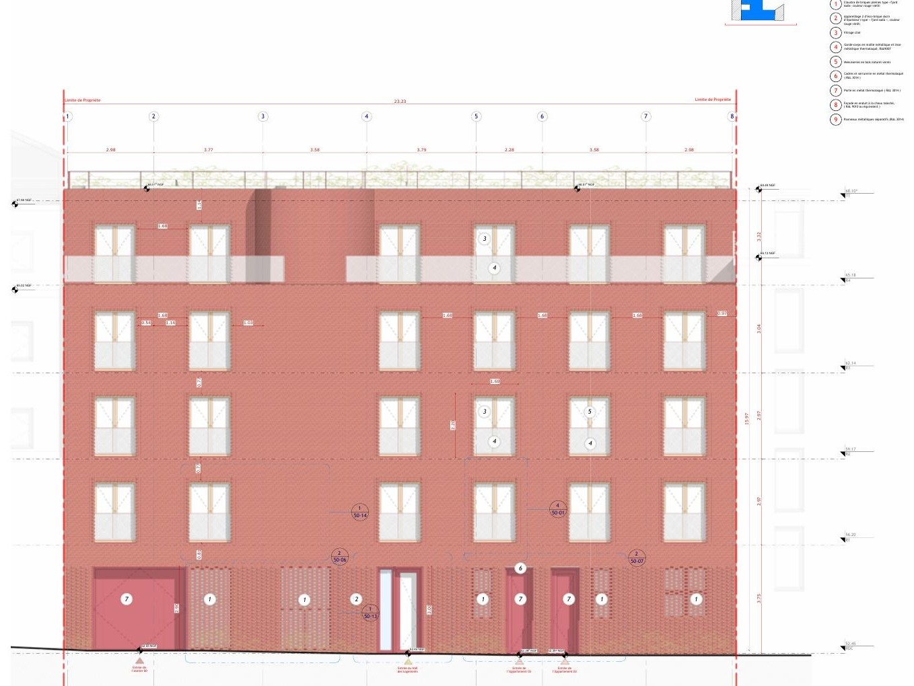
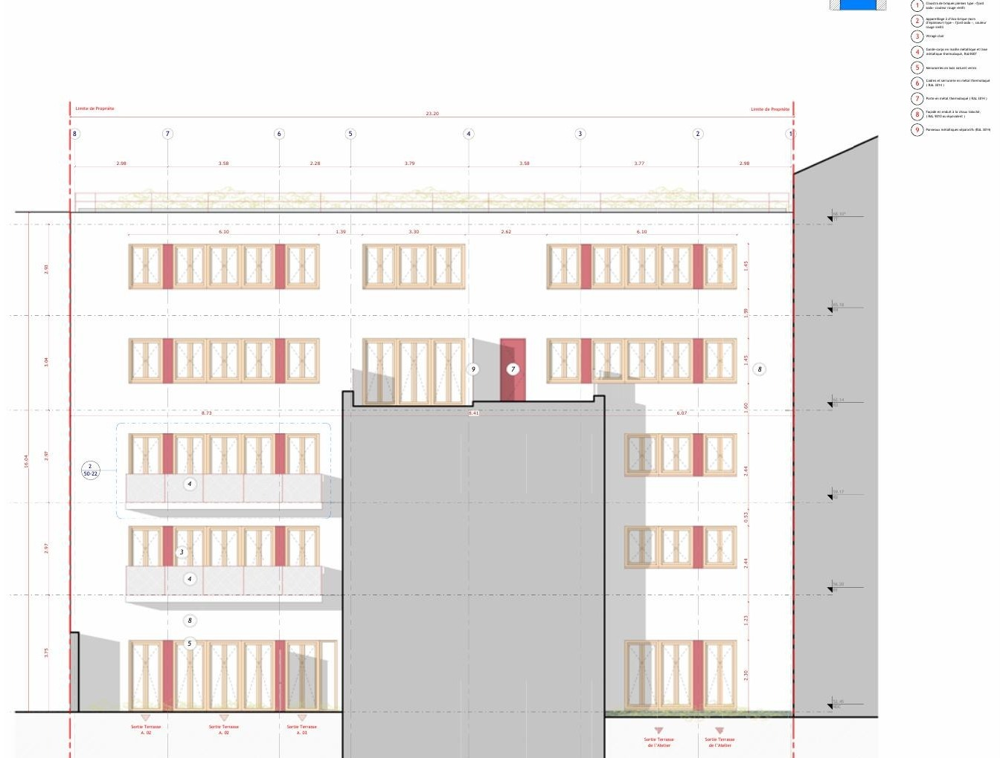

Foubert | Studio BELEM | Paris 13th
“Building new in Paris is also a responsibility toward the existing urban fabric.”
- Facade design and definition of architectural detailing | aged red eco-brick, claustra screen, brick bonding, joinery. Perspectives will be updated at the EXE phase.
- New residential construction in dense urban fabric | PLU constraints, height envelope and setback regulations, Paris 13th arrondissement. Main facade in aged solid red eco-brick type «fjord soda» | claustra screen, brick bonding, corner details.
- Demonstrated mastery: structural engineer coordination, complete layer-by-layer documentation.
Foubert
- Project type
- Residential / New Construction
- Phase
- PRO
- Year
- 2026 / Professional
- Location
- 1bis-3 passage Foubert, Paris 13th
- Office
- Studio BELEM
- Surface
- 420 m²
Studio BELEM / New housing / PLU Paris
Project
A new residential building on an infill plot in central Paris, designed within the constraints of the PLU local urban plan and the Paris architectural guidelines for new construction in a dense historic context. The project addresses the street alignment, manages the transition between party walls of differing heights, and produces a facade composition that speaks to its immediate neighbours without imitation.
The programme distributes six residential units across four levels with a shared courtyard at ground floor. The structural system is concrete with masonry infill, detailed in Revit for direct handover to the engineer. All PC documentation was prepared by the team at Studio BELEM with Hazem contributing from concept through to technical drawings and regulatory compliance checks.
Drawings and images
West facade
Fig. 1

Details
Fig. 2

East facade
Fig. 3

Green roof
Fig. 4

Aerial view
Fig. 5